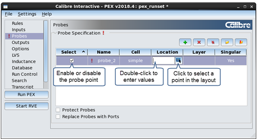

You
can specify probe points in your parasitic model using Calibre Interactive
PEX. Probe points are used to verify timing from specific points
on each net.
Procedure
- Choose to display
the Probes page.
- Do one of the following, depending
on whether you have an existing probe file:
The following
figure shows the GUI after clicking the button.
If you loaded an existing probe file, the probe parameters are filled
in.
Figure 1. Calibre Interactive
PEX Probes Page
- If any
probe parameters are missing, double-click in each column to specify
the required parameter. You can hover your mouse over each column
header to view a tooltip for the parameter.
To provide the probe
location, click the button
to choose a location in a connected layout design tool. To enter
coordinates, click next to the button
and enter a space-separated coordinate pair.
- (Optional) Specify the options “Protect Probes”
and “Replace Probes with Ports” below the Probe Points table.
- When done,
click the button
to save the probe file.